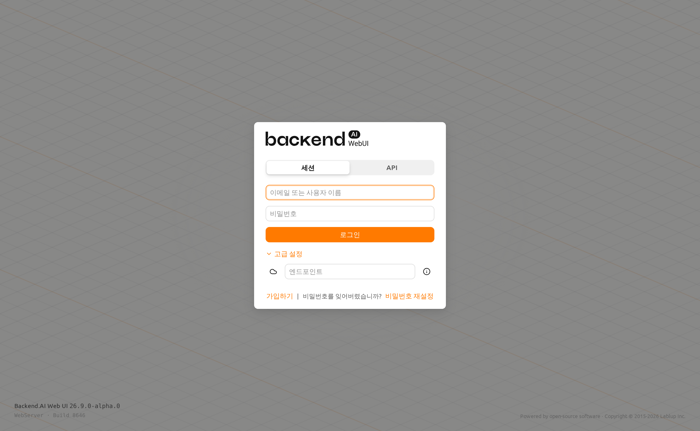
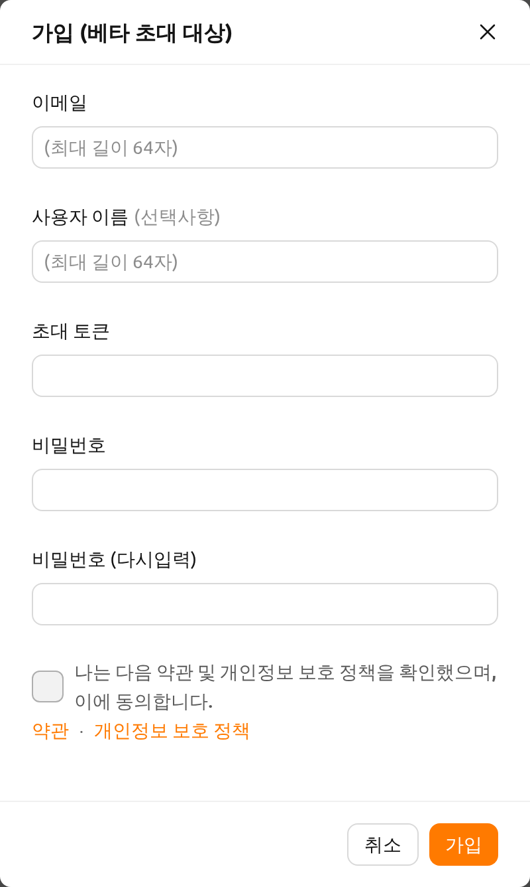
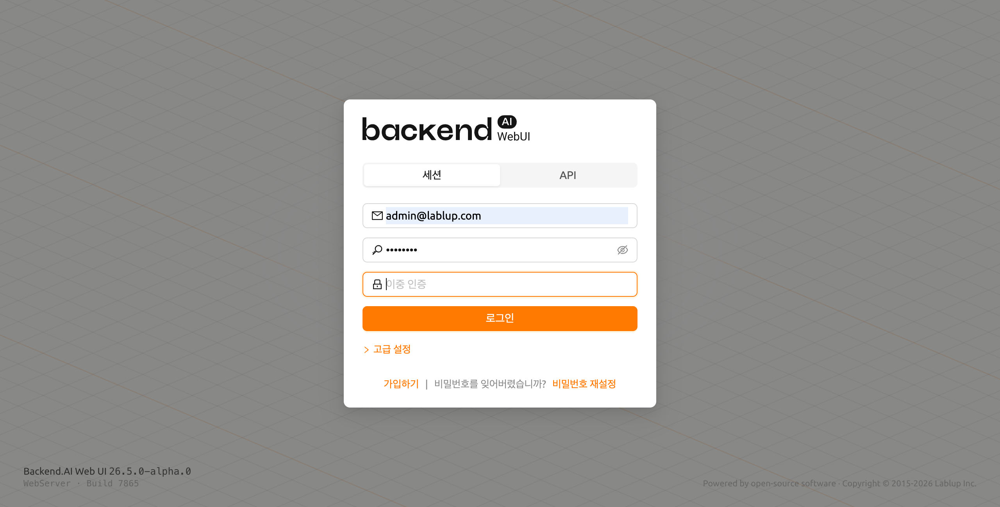
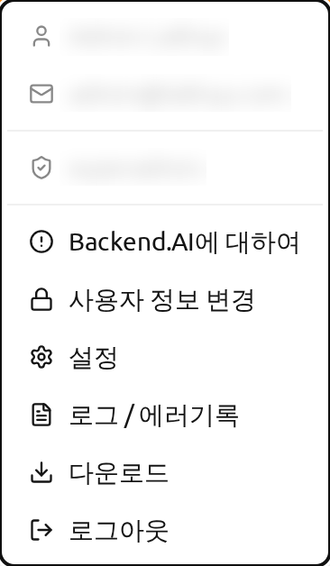
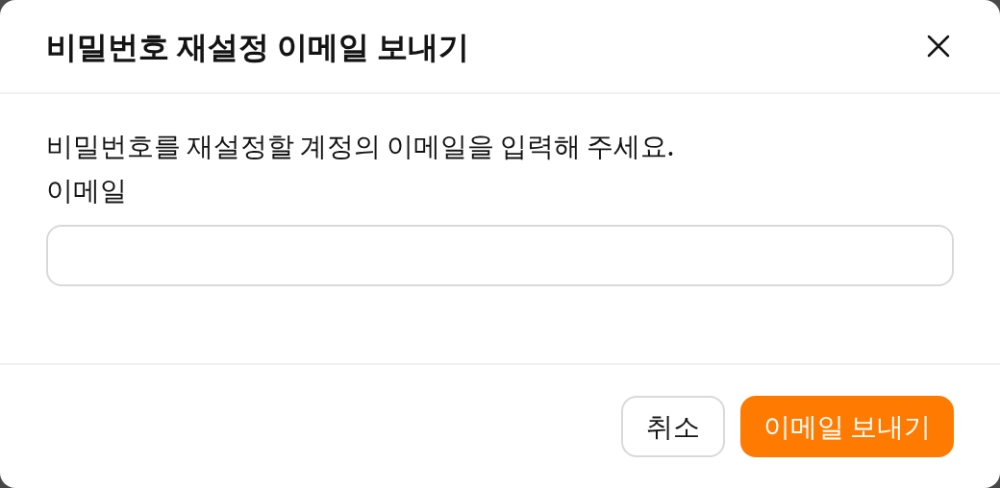
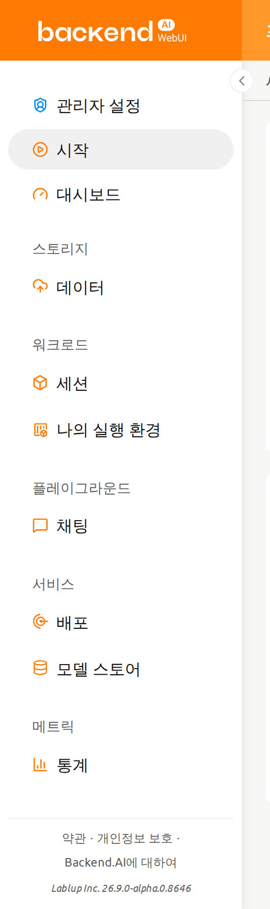
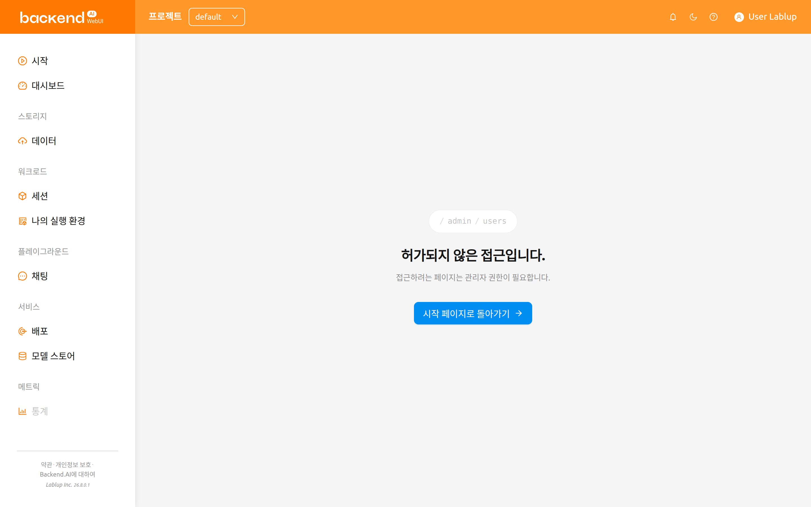

가입 및 로그인#
가입#
WebUI를 실행하면 로그인 대화창이 나타납니다. 아직 가입을 하지 않은 경우에는 대화창 하단의 가입하기 링크를 클릭하세요.

이메일과 사용자 이름, 비밀번호 등의 정보를 입력하고 약관과 개인정보 보호 정책을 읽고 동의한 뒤 가입 버튼을 클릭합니다. 시스템 설정에 따라 가입하기 위해 별도의 초대 토큰을 입력해야 할 수도 있습니다. 또한, 이메일이 본인의 것이 맞는지 검증하는 이메일이 전송될 수도 있습니다. 검증 이메일이 전송되는 경우, 이메일을 읽고 확인 링크를 클릭해서 검증을 통과해야만 가입한 계정으로 로그인할 수 있습니다.

서버 설정이나 플러그인 설정에 따라 사용자에 의한 가입이 막혀있을 수 있습니다. 이 경우에는 시스템 관리자에게 문의하십시오.
악성 사용자가 다른 사용자의 비밀번호를 추측하기 어렵게 만들기 위해, 비밀번호는 8자 이상, 알파벳/특수문자/숫자를 1개 이상 포함해야 합니다.
로그인#
이메일(또는 사용자 이름)과 비밀번호를 입력하고 로그인 버튼을 클릭합니다.
로그인 화면에는 로그인 대화창 뒤에 대각선 물결 애니메이션 배경 패턴이 표시됩니다. 운영 체제가 모션 줄이기로 설정된 경우 애니메이션은 자동으로 비활성화됩니다. 화면 왼쪽 하단에는 애플리케이션 버전과 빌드 정보가, 오른쪽 하단에는 저작권 정보가 표시됩니다. 로그인 대화창이 열리면 첫 번째 필드에 자동으로 포커스가 맞춰집니다. 세션 모드에서는 이메일/사용자 이름 필드, API 모드에서는 API Key 필드입니다.
연결 모드#
관리자가 활성화한 경우, 로그인 대화창 상단에 세션 모드와 API 모드를 선택할 수 있는 모드 선택기가 나타납니다.
- 세션: 표준 로그인 모드입니다. 이메일/사용자 이름과 비밀번호를 입력하여 인증합니다. 대부분의 사용자에게 기본 모드입니다.
- API: API 키페어를 사용하여 로그인합니다. 이메일과 비밀번호 대신 API Key와 Secret Key를 입력합니다. 프로그래밍 방식의 접근에 유용합니다.
API 엔드포인트#
고급 설정 링크를 클릭하면 엔드포인트 설정 섹션이 펼쳐집니다. API 엔드포인트 필드에 Manager로 연결을 중계하는 Backend.AI Webserver의 URL을 입력합니다.
Webserver의 설치 및 설정 환경에 따라, 엔드포인트가 고정되어 있을 수 있습니다.
Backend.AI는 사용자의 비밀번호를 단방향 해시를 통해 안전하게 보관하고 있습니다. BSD의 기본 암호 해시인 BCrypt를 사용하고 있어, 서버 관리자도 사용자의 비밀번호를 알 수 없습니다.
SSO 로그인 (SAML / OpenID)#
관리자가 SSO(Single Sign-On)를 설정한 경우, 표준 로그인 버튼 아래에 추가 로그인 버튼이 나타날 수 있습니다.
- SAML 로그인: 조직의 SAML ID 제공자를 사용하여 인증합니다.
- [Realm 이름] 로그인: OpenID Connect 제공자를 사용하여 인증합니다. 버튼 레이블에는 관리자가 설정한 realm 이름이 표시됩니다.
해당 SSO 버튼을 클릭하면 조직의 ID 제공자로 리디렉션되어 인증이 진행됩니다.
SSO 로그인 옵션은 시스템 관리자가 활성화한 경우에만 표시됩니다.
OTP 로그인 (이중 인증)#
계정에 이중 인증(2FA)이 활성화된 경우, 이메일과 비밀번호를 입력한 후 OTP(일회용 비밀번호) 필드가 추가로 나타납니다.

인증 애플리케이션(Google Authenticator, 1Password, Bitwarden 등)을 열고 OTP 필드에 6자리 코드를 입력하면 로그인이 완료됩니다.
최초 로그인 시 TOTP 설정#
관리자가 이중 인증을 필수로 설정하였고 아직 TOTP를 설정하지 않은 경우, 첫 로그인 성공 후 자동으로 설정 대화창이 나타납니다. 인증 애플리케이션으로 QR 코드를 스캔하거나 제공된 키를 직접 입력한 뒤, 6자리 인증 코드를 입력하면 설정이 완료됩니다.
TOTP 설정 이후에는 매 로그인 시 OTP 코드를 입력해야 합니다.
계정 설정에서 2FA를 활성화하거나 비활성화하는 방법에 대한 자세한 내용은 상단 바 기능의 이중 인증 설정 섹션을 참고하세요.
동시 세션 감지#
다른 브라우저나 기기에서 이미 로그인된 상태에서 로그인을 시도하면, 기존 세션이 활성 상태임을 알리는 확인 대화창이 나타납니다. 기존 세션을 종료하고 새로 로그인하거나, 취소하여 기존 세션을 유지할 수 있습니다.
이 기능은 계정에 대한 의도치 않은 동시 접근을 방지합니다. 예상치 못하게 이 대화창이 나타나는 경우, 다른 사람이 사용자의 자격 증명을 사용하고 있을 수 있습니다. 이 경우 로그인을 진행하여 다른 세션을 종료하고 비밀번호를 변경하는 것을 권장합니다.
로그인이 완료되면 시작 페이지에서 현재 사용하고 있는 자원량 등의 정보를 확인할 수 있습니다.
우측 상단의 사용자 아이콘을 클릭하면 사용자 메뉴가 나타납니다. 로그아웃 메뉴를 선택하여 로그아웃할 수 있습니다.

시스템에 로그인 세션 타이머가 활성화되어 있는 경우, 타이머가 만료되면 자동으로 로그아웃됩니다. 자세한 내용은 상단 바 기능의 로그인 세션 타이머 섹션을 참고하세요.
비밀번호를 잊어버렸을 경우#
비밀번호를 잊어버렸을 경우, 로그인 패널의 비밀번호를 잊어버렸습니까? 텍스트 옆의 비밀번호 재설정 링크를 클릭합니다. 이메일 주소를 입력할 수 있는 대화창이 나타나며, 비밀번호 변경 링크가 포함된 이메일을 받을 수 있습니다. 이메일의 안내에 따라 비밀번호를 재설정합니다.

서버 설정에 따라 비밀번호 변경 기능이 제공되지 않을 수 있습니다. 이 경우에는 관리자에게 문의하십시오.
로그인 실패가 10회 이상 발생하면 보안상의 이유로 로그인 시도가 20분간 제한됩니다. 만약 20분 후에도 로그인 제한이 계속 유지되는 경우에는 시스템 관리자에게 문의하십시오.
사이드바의 메뉴#
권한에 따라 표시되는 메뉴#
사이드바에는 사용자가 열 수 있는 페이지만 표시됩니다. 모든 사용자에게 일반 메뉴 그룹이 표시되며, 슈퍼 관리자와 도메인 관리자에게는 관리 그룹이 추가로 표시됩니다.
프로젝트 관리자용 항목은 계정 전체가 아니라 현재 선택된 프로젝트를 기준으로 판단됩니다. 작업 중인 프로젝트는 페이지 주소의 일부이므로, 상단 바의 프로젝트 선택기에서 프로젝트를 전환하면 권한이 다시 계산됩니다. 즉, 같은 계정이라도 어떤 프로젝트에서는 프로젝트 관리자이고 다른 프로젝트에서는 일반 사용자일 수 있으며, 그에 따라 프로젝트 관리자용 항목이 사이드바에 나타나거나 사라집니다. 특정 프로젝트를 가리키는 즐겨찾기나 공유된 링크를 열었을 때도 마찬가지로, 페이지가 로드되는 즉시 해당 프로젝트에서의 권한이 사이드바에 반영됩니다.
프로젝트 관리자에게 제공되는 항목과 각 항목의 내용은 프로젝트 관리자 기능 장의 프로젝트 관리자 사이드바 섹션을 참고하세요.
사이드바 크기 조절#
사이드바 오른쪽에 있는 버튼을 통해 사이드바의 크기를 변경할 수 있습니다.
버튼을 클릭하면 사이드바의 너비가 크게 줄어들어 콘텐츠를 더 넓게 볼 수 있습니다.
다시 클릭하면 사이드바가 원래 너비로 돌아갑니다.
단축키 ( [ ) 를 사용하여 좁은 사이드바와 원래 너비 사이를 전환할 수도 있습니다.

열 수 없는 페이지#
권한이 없는 주소를 열면(예: 다른 권한을 가지고 있을 때 저장한 즐겨찾기나 관리자가 공유한 링크) WebUI는 페이지 내용 대신 허가되지 않은 접근입니다. 페이지를 표시합니다. 이 페이지에는 열려고 한 주소가 표시되고, 해당 페이지에 접근할 권한이 없다는 설명과 함께 사용자가 이용할 수 있는 첫 번째 페이지로 이동하는 버튼이 제공됩니다. 동시에 사이드바는 일반 메뉴로 되돌아가므로 로그아웃하지 않고 계속 탐색할 수 있습니다.

이 페이지가 표시되었다고 해서 계정에 문제가 있는 것은 아닙니다. 주소에 지정된 프로젝트에서 사용자가 가지고 있지 않은 권한이 해당 페이지에 필요하다는 의미입니다. 접근할 수 있어야 한다고 생각되면 관리자에게 해당 프로젝트에서의 권한을 확인해 달라고 요청하십시오.